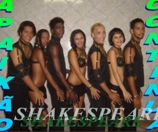

Jefferson Santa Rosa
Música, palco e cultura pernambucana. Jefferson Santa Rosa transita por diferentes momentos da música popular do Nordeste, com presença recorrente em eventos tradicionais do Carnaval e do São João.

Música, palco
e conexão
Jefferson Santa Rosa é músico e artista com atuação em eventos e festas populares de Pernambuco. Seu trabalho reúne referências da música popular brasileira e se fortalece na conexão com o público em apresentações ao vivo e em grandes celebrações culturais do estado.
Ver trajetóriaHistória
Jefferson Santa Rosa é artista pernambucano com atuação em festas populares, palcos de Carnaval e programações tradicionais do calendário cultural do estado.
Ao longo dos últimos anos, ele passou por apresentações no Forrozão do Galo, em eventos do Carnaval e em festividades ligadas à música popular nordestina. Sua trajetória traz presença em Recife, Olinda e outras cidades de Pernambuco, em uma atuação que combina música, palco e identidade regional.
Entre os lançamentos e registros mais relevantes, destacam-se músicas como “Incendeia”, “O Rei Mandou”, “Mamadeira do Papai”, “Zero a Um”, “Dona do Meu Coração” e “Tá Com o Bumbum Perna Grossa!”. O repertório também dialoga com ritmos e referências do frevo, do afoxé e da música popular brasileira.
Em 2025, Jefferson ganhou atenção nacional ao registrar e publicar nas redes sociais a apresentação de Dona Lila, cozinheira de Paulista (PE), que viralizou e foi exibida pelo Domingo Espetacular, da Record TV. Esse momento reforçou sua presença não apenas como artista, mas como protagonista de histórias que conectam música, cultura e atenção pública.
Trajetória
Registros de apresentações confirmados em fonte oficial e lançamentos encontrados nas plataformas musicais.
Palcos e grandes eventos
Galo da Madrugada, Recife, 2023. Participação como convidado da Orquestra Metais, ao lado de Ed Carlos.
Forrozão do Galo, Praça Sérgio Loreto, Recife. Na 14ª edição, em 2024, como participação no show de Gustavo Travassos. Na 15ª edição, em 2025, listado entre as atrações principais do palco.
São João do Alto do Céu, Igarassu, 2024. Apresentação em 23 de junho, com registro oficial de contratação.
Arrasta Pé Jardim Atlântico, Olinda, 2025. Apresentação em 23 de junho, com registro oficial de contratação.
Carnaval de Olinda, Polo Alafin Oyó, 2026. Apresentação na programação oficial do Carnaval, em 17 de fevereiro, às 22h.
Momentos importantes
Esquenta de Carnaval 2025. Participação na faixa “Arrêa a Lenha / É Tanto Amor”, de Victor Moury com Jefferson Santa Rosa, lançada em 17 de janeiro de 2025.
Como compositor. “Dona do Meu Coração” tem composição creditada a Jefferson Santa Rosa e Cassiano Produções. “Além do Prazer”, registrada no repertório da Banda Shakespeare, tem composição creditada a Jefferson Santa Rosa e José Victor Barbosa de Lima.
Catálogo em plataformas digitais. Os lançamentos aparecem creditados a Jefferson Santa Rosa e à JBSR Produções nas plataformas consultadas.
Atualmente
Em 2026, Jefferson Santa Rosa integrou a programação oficial do Carnaval de Olinda, no Polo Alafin Oyó. No ano anterior, havia levado o show ao Forrozão do Galo, em Recife, e ao Arrasta Pé Jardim Atlântico, em Olinda.
Seu catálogo segue disponível nas plataformas musicais, com lançamentos próprios e participações em projetos de outros artistas pernambucanos.
A agenda de novos shows está em atualização. Para contratar uma apresentação, fale com a equipe.
Ouça o repertório
Lançamentos, participações e composições de Jefferson Santa Rosa.